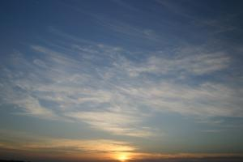

Le 8 décembre 2004,
 Les chameliers nous reveillent avant l’aube afin de pouvoir profiter d’un beau lever de soleil. Emmitoufles sous nos couvertures (qui a dit qu’il faisait chaud dans le desert ?), nous admirons le spectacle, un verre de chai a la main. Le petit dejeuner nous est meme servi "au lit". Toasts a la confiture, biscuits sucres, porridge en plein milieu du desert, c’est la classe !! Apres nous etre empiffres comme des goinfres, nous repartons sur nos montures, au trot cette fois, jusqu’a revenir a notre point de depart ou nous attend la jeep pour le retour a l’hotel.
Cette aventure dans le desert nous a enormement plu a tous les deux ! C’est un retour a la nature brute sans aspect materiel qui nous fait oublier l’essentiel : admirer la beaute de notre planete. Jamais a Paris je ne levais les yeux pour regarder le ciel, jamais je ne restais des heures sans rien faire de particulier, juste a reflechir... J’etais trop prise par le temps, toujours a courir dans tous les sens. Ici, le temps semble se dilater. Nous passons tellement de moments a attendre (pour manger, ca dure toujours de heures, pour les bus ou les trains...) que rapidement notre esprit se met a vagabonder a leur aise. je ne me suis pas encore ennuyee une minute, meme pendant les longs trajets de 7 heures en bus, le temps me semble passer vite. C’est une des choses importantes que je souhaite reapprendre lors de mon tour du monde : prendre le temps de penser.
Nous revenons donc a l’hotel bien fatigues et avec un leger mal de dos pour ma part, non pas a cause du chameau, mais certainement a cause de ma nuit passee sur le sable, ce qui n’etait pas tres confortable. Le reste de l’apres-midi est didee a la sieste, nous visiterons la ville demain.
Eve-Laure
{kind=link}